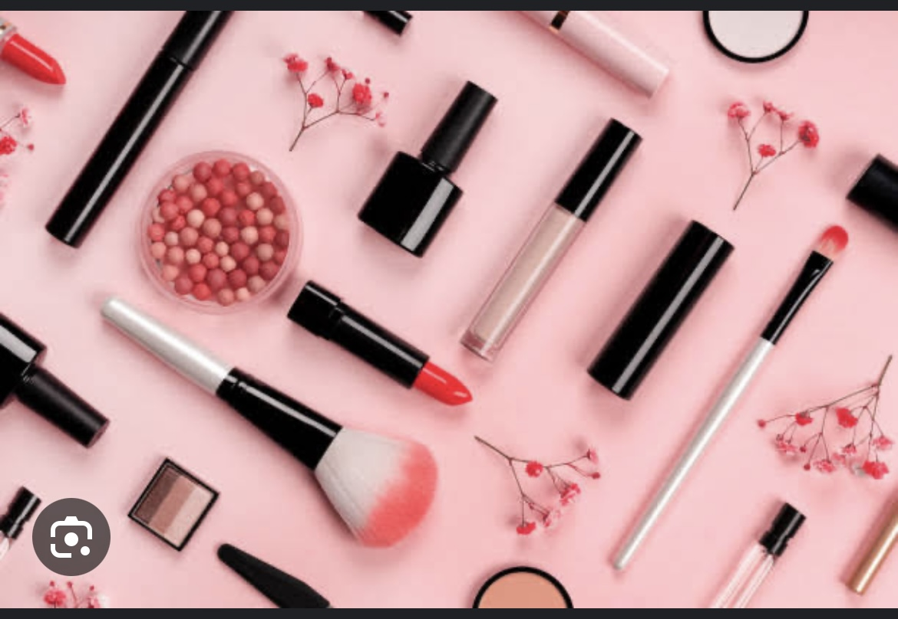

sobre maquiagem
A maquiagem é uma forma de arte e expreção pesoal que tem sido praticada por séculos, ela permite realçar a beleza natural,econder imperfeiçoẽs e criar visuai imprecionantes,hoje existe uma infinidade de produtos e técnicas diponiveis, tornando a maquiagem acesivel a todosindependente do nivel de habilidade ela desempenha um papel eencial no mundo da moda e no cotidiano,permitindo que as pesoas se sintam confiante e expesão sua individualidade. Portanto, a maquiagem é muito mais do que apenas produtos, é uma forma de autenticidade e empoderamento pesoal.
